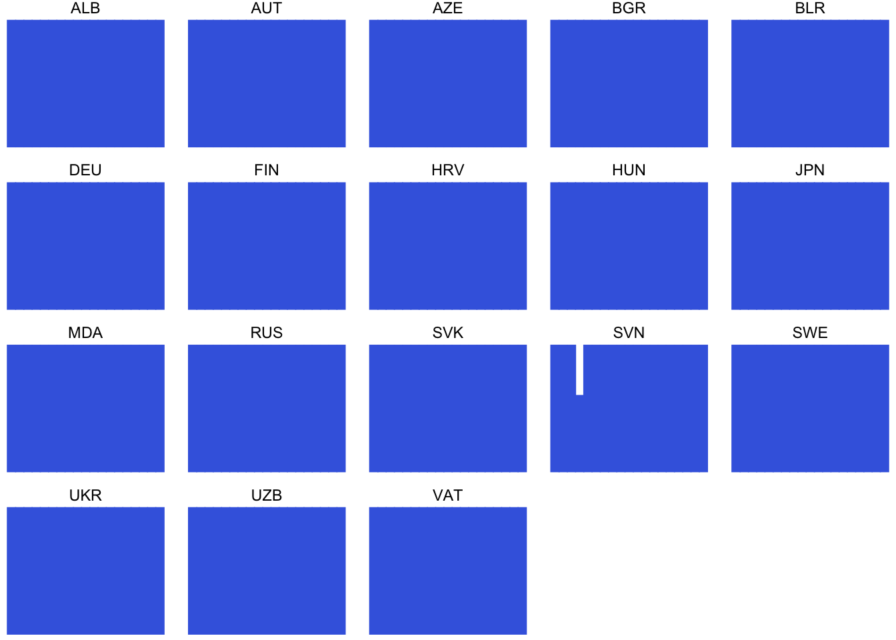
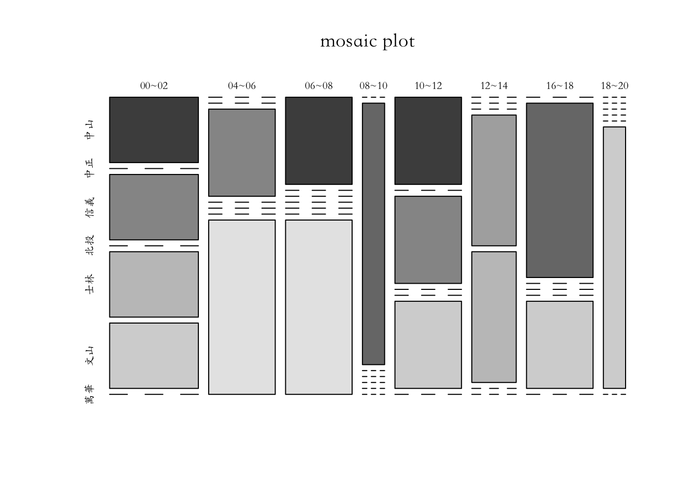

Chapter 5 使用基礎R套件
5.1 案例：產假支薪跨國跨時比較
本案例將利用R來重製華盛頓郵報在2016/08/13的一篇談論美國婦女產假支薪情形的報導。這個案例中將會應用到data.frame和基本的繪圖與資料摘要方法。The case adaped Washington Post’s paid maternity leave as an exmaple to introduce basic skill of data.frame, plotting, and data mamipulation.
5.1.1 Reading .xlsx by readxl package
- readxl也包含在tidyverse的套件集中，所以應該已經在前次安裝過，不用特別安裝。
# Import readxl package
library(readxl)
options(stringsAsFactors = FALSE)# Use read_excel() to convert excel sheet to data.frame
df <- read_excel("data/WORLD-MACHE_Gender_6.8.15.xls", "Sheet1", col_names=T)5.1.2 Previewing data by View(), class(), dim(), str(), summary() and names()
# View(df)
class(df) # [1] "tbl_df" "tbl" "data.frame"## [1] "tbl_df" "tbl" "data.frame"dim(df)## [1] 197 156# Show names of variables (vectors, columns) by names()
names(df)## [1] "country" "iso2" "iso3"
## [4] "region" "wb_econ" "matleave_95"
## [7] "matleave_96" "matleave_97" "matleave_98"
## [10] "matleave_99" "matleave_00" "matleave_01"
## [13] "matleave_02" "matleave_03" "matleave_04"
## [16] "matleave_05" "matleave_06" "matleave_07"
## [19] "matleave_08" "matleave_09" "matleave_10"
## [22] "matleave_11" "matleave_12" "matleave_13"
## [25] "matleave_wrr_95" "matleave_wrr_96" "matleave_wrr_97"
## [28] "matleave_wrr_98" "matleave_wrr_99" "matleave_wrr_00"
## [31] "matleave_wrr_01" "matleave_wrr_02" "matleave_wrr_03"
## [34] "matleave_wrr_04" "matleave_wrr_05" "matleave_wrr_06"
## [37] "matleave_wrr_07" "matleave_wrr_08" "matleave_wrr_09"
## [40] "matleave_wrr_10" "matleave_wrr_11" "matleave_wrr_12"
## [43] "matleave_wrr_13" "bf_dur_95" "bf_dur_96"
## [46] "bf_dur_97" "bf_dur_98" "bf_dur_99"
## [49] "bf_dur_00" "bf_dur_01" "bf_dur_02"
## [52] "bf_dur_03" "bf_dur_04" "bf_dur_05"
## [55] "bf_dur_06" "bf_dur_07" "bf_dur_08"
## [58] "bf_dur_09" "bf_dur_10" "bf_dur_11"
## [61] "bf_dur_12" "bf_dur_13" "mat_bfeed_6mon_95"
## [64] "mat_bfeed_6mon_96" "mat_bfeed_6mon_97" "mat_bfeed_6mon_98"
## [67] "mat_bfeed_6mon_99" "mat_bfeed_6mon_00" "mat_bfeed_6mon_01"
## [70] "mat_bfeed_6mon_02" "mat_bfeed_6mon_03" "mat_bfeed_6mon_04"
## [73] "mat_bfeed_6mon_05" "mat_bfeed_6mon_06" "mat_bfeed_6mon_07"
## [76] "mat_bfeed_6mon_08" "mat_bfeed_6mon_09" "mat_bfeed_6mon_10"
## [79] "mat_bfeed_6mon_11" "mat_bfeed_6mon_12" "mat_bfeed_6mon_13"
## [82] "minage_fem_leg_95" "minage_fem_leg_96" "minage_fem_leg_97"
## [85] "minage_fem_leg_98" "minage_fem_leg_99" "minage_fem_leg_00"
## [88] "minage_fem_leg_01" "minage_fem_leg_02" "minage_fem_leg_03"
## [91] "minage_fem_leg_04" "minage_fem_leg_05" "minage_fem_leg_06"
## [94] "minage_fem_leg_07" "minage_fem_leg_08" "minage_fem_leg_09"
## [97] "minage_fem_leg_10" "minage_fem_leg_11" "minage_fem_leg_12"
## [100] "legal_diff_leg_95" "legal_diff_leg_96" "legal_diff_leg_97"
## [103] "legal_diff_leg_98" "legal_diff_leg_99" "legal_diff_leg_00"
## [106] "legal_diff_leg_01" "legal_diff_leg_02" "legal_diff_leg_03"
## [109] "legal_diff_leg_04" "legal_diff_leg_05" "legal_diff_leg_06"
## [112] "legal_diff_leg_07" "legal_diff_leg_08" "legal_diff_leg_09"
## [115] "legal_diff_leg_10" "legal_diff_leg_11" "legal_diff_leg_12"
## [118] "minage_fem_pc_95" "minage_fem_pc_96" "minage_fem_pc_97"
## [121] "minage_fem_pc_98" "minage_fem_pc_99" "minage_fem_pc_00"
## [124] "minage_fem_pc_01" "minage_fem_pc_02" "minage_fem_pc_03"
## [127] "minage_fem_pc_04" "minage_fem_pc_05" "minage_fem_pc_06"
## [130] "minage_fem_pc_07" "minage_fem_pc_08" "minage_fem_pc_09"
## [133] "minage_fem_pc_10" "minage_fem_pc_11" "minage_fem_pc_12"
## [136] "legal_diff_pc_95" "legal_diff_pc_96" "legal_diff_pc_97"
## [139] "legal_diff_pc_98" "legal_diff_pc_99" "legal_diff_pc_00"
## [142] "legal_diff_pc_01" "legal_diff_pc_02" "legal_diff_pc_03"
## [145] "legal_diff_pc_04" "legal_diff_pc_05" "legal_diff_pc_06"
## [148] "legal_diff_pc_07" "legal_diff_pc_08" "legal_diff_pc_09"
## [151] "legal_diff_pc_10" "legal_diff_pc_11" "legal_diff_pc_12"
## [154] "minwage_ppp_2013" "mw_overtime" "oecd"5.1.3 Select variables
# Select the 3rd and 6th to 24th columns
matleave <- df[ , c(3, 6:24)]
# Use class(), dim(), and str() to inspect the data
class(matleave)## [1] "tbl_df" "tbl" "data.frame"dim(matleave)## [1] 197 20str(matleave)## tibble [197 × 20] (S3: tbl_df/tbl/data.frame)
## $ iso3 : chr [1:197] "AFG" "ALB" "DZA" "AND" ...
## $ matleave_95: num [1:197] 2 5 3 2 2 2 2 3 1 5 ...
## $ matleave_96: num [1:197] 2 5 3 2 2 2 2 3 1 5 ...
## $ matleave_97: num [1:197] 2 5 3 2 2 2 2 3 1 5 ...
## $ matleave_98: num [1:197] 2 5 3 2 2 2 2 3 1 5 ...
## $ matleave_99: num [1:197] 2 5 3 2 2 2 2 3 1 5 ...
## $ matleave_00: num [1:197] 2 5 3 3 2 2 2 3 1 5 ...
## $ matleave_01: num [1:197] 2 5 3 3 2 2 2 3 1 5 ...
## $ matleave_02: num [1:197] 2 5 3 3 2 2 2 3 1 5 ...
## $ matleave_03: num [1:197] 2 5 3 3 2 2 2 3 1 5 ...
## $ matleave_04: num [1:197] 2 5 3 3 2 2 2 5 1 5 ...
## $ matleave_05: num [1:197] 2 5 3 3 2 2 2 5 1 5 ...
## $ matleave_06: num [1:197] 2 5 3 3 2 2 2 5 1 5 ...
## $ matleave_07: num [1:197] 2 5 3 3 2 2 2 5 1 5 ...
## $ matleave_08: num [1:197] 2 5 3 3 2 2 2 5 1 5 ...
## $ matleave_09: num [1:197] 2 5 3 3 2 2 2 5 1 5 ...
## $ matleave_10: num [1:197] 2 5 3 3 2 2 2 5 NA 5 ...
## $ matleave_11: num [1:197] 2 5 3 3 2 2 2 5 3 5 ...
## $ matleave_12: num [1:197] 2 5 3 3 2 2 2 5 3 5 ...
## $ matleave_13: num [1:197] 2 5 3 3 2 2 2 5 3 5 ...5.1.4 Check & Replace NAs
NA: Not Availablev[is.na(v)]will select all NA cells- 以0取代NA的資料格。避免繪圖產生錯誤
sum(is.na(matleave))的目的是檢測還有沒有NA值。如果有的話is.na()就會是TRUE，那麼加總後，如果不是0，那就代表還有NA。
# is.na() to indicate each element is NA or NOT(TRUE/FALSE)
head(is.na(matleave), n=20)| iso3 | matleave_95 | matleave_96 | matleave_97 | matleave_98 | matleave_99 | matleave_00 | matleave_01 | matleave_02 | matleave_03 | matleave_04 | matleave_05 | matleave_06 | matleave_07 | matleave_08 | matleave_09 | matleave_10 | matleave_11 | matleave_12 | matleave_13 |
|---|---|---|---|---|---|---|---|---|---|---|---|---|---|---|---|---|---|---|---|
| FALSE | FALSE | FALSE | FALSE | FALSE | FALSE | FALSE | FALSE | FALSE | FALSE | FALSE | FALSE | FALSE | FALSE | FALSE | FALSE | FALSE | FALSE | FALSE | FALSE |
| FALSE | FALSE | FALSE | FALSE | FALSE | FALSE | FALSE | FALSE | FALSE | FALSE | FALSE | FALSE | FALSE | FALSE | FALSE | FALSE | FALSE | FALSE | FALSE | FALSE |
| FALSE | FALSE | FALSE | FALSE | FALSE | FALSE | FALSE | FALSE | FALSE | FALSE | FALSE | FALSE | FALSE | FALSE | FALSE | FALSE | FALSE | FALSE | FALSE | FALSE |
| FALSE | FALSE | FALSE | FALSE | FALSE | FALSE | FALSE | FALSE | FALSE | FALSE | FALSE | FALSE | FALSE | FALSE | FALSE | FALSE | FALSE | FALSE | FALSE | FALSE |
| FALSE | FALSE | FALSE | FALSE | FALSE | FALSE | FALSE | FALSE | FALSE | FALSE | FALSE | FALSE | FALSE | FALSE | FALSE | FALSE | FALSE | FALSE | FALSE | FALSE |
| FALSE | FALSE | FALSE | FALSE | FALSE | FALSE | FALSE | FALSE | FALSE | FALSE | FALSE | FALSE | FALSE | FALSE | FALSE | FALSE | FALSE | FALSE | FALSE | FALSE |
| FALSE | FALSE | FALSE | FALSE | FALSE | FALSE | FALSE | FALSE | FALSE | FALSE | FALSE | FALSE | FALSE | FALSE | FALSE | FALSE | FALSE | FALSE | FALSE | FALSE |
| FALSE | FALSE | FALSE | FALSE | FALSE | FALSE | FALSE | FALSE | FALSE | FALSE | FALSE | FALSE | FALSE | FALSE | FALSE | FALSE | FALSE | FALSE | FALSE | FALSE |
| FALSE | FALSE | FALSE | FALSE | FALSE | FALSE | FALSE | FALSE | FALSE | FALSE | FALSE | FALSE | FALSE | FALSE | FALSE | FALSE | TRUE | FALSE | FALSE | FALSE |
| FALSE | FALSE | FALSE | FALSE | FALSE | FALSE | FALSE | FALSE | FALSE | FALSE | FALSE | FALSE | FALSE | FALSE | FALSE | FALSE | FALSE | FALSE | FALSE | FALSE |
| FALSE | FALSE | FALSE | FALSE | FALSE | FALSE | FALSE | FALSE | FALSE | FALSE | FALSE | FALSE | FALSE | FALSE | FALSE | FALSE | FALSE | FALSE | FALSE | FALSE |
| FALSE | FALSE | FALSE | FALSE | FALSE | FALSE | FALSE | FALSE | FALSE | FALSE | FALSE | FALSE | FALSE | FALSE | FALSE | FALSE | FALSE | FALSE | FALSE | FALSE |
| FALSE | FALSE | FALSE | FALSE | FALSE | FALSE | FALSE | FALSE | FALSE | FALSE | FALSE | FALSE | FALSE | FALSE | FALSE | FALSE | FALSE | FALSE | FALSE | FALSE |
| FALSE | FALSE | FALSE | FALSE | FALSE | FALSE | FALSE | FALSE | FALSE | FALSE | FALSE | FALSE | FALSE | FALSE | FALSE | FALSE | FALSE | FALSE | FALSE | FALSE |
| FALSE | FALSE | FALSE | FALSE | FALSE | FALSE | FALSE | FALSE | FALSE | FALSE | FALSE | FALSE | FALSE | FALSE | FALSE | FALSE | FALSE | FALSE | FALSE | FALSE |
| FALSE | FALSE | FALSE | FALSE | FALSE | FALSE | FALSE | FALSE | FALSE | FALSE | FALSE | FALSE | FALSE | FALSE | FALSE | FALSE | FALSE | FALSE | FALSE | FALSE |
| FALSE | FALSE | FALSE | FALSE | FALSE | FALSE | FALSE | FALSE | FALSE | FALSE | FALSE | FALSE | FALSE | FALSE | FALSE | FALSE | FALSE | FALSE | FALSE | FALSE |
| FALSE | FALSE | FALSE | FALSE | FALSE | FALSE | FALSE | FALSE | FALSE | FALSE | FALSE | FALSE | FALSE | FALSE | FALSE | FALSE | FALSE | FALSE | FALSE | FALSE |
| FALSE | FALSE | FALSE | FALSE | FALSE | FALSE | FALSE | FALSE | FALSE | FALSE | FALSE | FALSE | FALSE | FALSE | FALSE | FALSE | FALSE | FALSE | FALSE | FALSE |
| FALSE | FALSE | FALSE | FALSE | FALSE | FALSE | FALSE | FALSE | FALSE | FALSE | FALSE | FALSE | FALSE | TRUE | TRUE | FALSE | FALSE | FALSE | FALSE | FALSE |
# Assign 0 to those NA data
matleave[is.na(matleave)] <- 0
# anyNA() to check if there are still NA cells.
anyNA(matleave)## [1] FALSE# sum(is.na()) to count the number of NA
sum(is.na(matleave))## [1] 05.1.5 Filtering data
5.1.5.1 Filtered by the last year value
# Use logical comparison to see if the last year equals to 5
# Assign matching data to var m5
m5 <- matleave[matleave$'matleave_13'==5, ]
# nrow() to count matching data
nrow(m5)## [1] 34# Is it possible to use length() to check the data length?
# matleave$'matleave_13'
# matleave$'matleave_13'==5
# length(matleave$'matleave_13'==5)5.1.6 Plotting
- Plotting the second rows and all columns except 1st column
- Question 為何要
unlist()？請試著執行barplot(matleave[2, -1])這個沒有unlist()的版本，看看會有什麼錯誤訊息。資料結構有何差異呢？ - 嘗試用
class()或str()嘗試觀察沒有unlist()版本的資料，看看資料型態和有unlist()的會有何不同？
5.1.6.1 Plotting one line
# barplot() the second row of m55
# barplot(m55[2, ]) # raise error
# barplot() the second row when neglecting the first column
# barplot(m55[2, -1]) # raise error
# Take a look at the data type of matleave[2, ]
class(matleave[2, -1])## [1] "tbl_df" "tbl" "data.frame"class(unlist(matleave[2, -1]))## [1] "numeric"# unlist() to convert a single row data.frame to a vector for barplot()
barplot(unlist(m55[2, -1]))
- Testing
# View(matleave[1]) # select the 1st variable
# View(matleave[ ,1]) # select the 1st column
# View(matleave[1, ]) # select the 1st row
class(m55[1]) # "tbl_df" "tbl" "data.frame"## [1] "tbl_df" "tbl" "data.frame"class(m55[ ,1]) # "tbl_df" "tbl" "data.frame"## [1] "tbl_df" "tbl" "data.frame"class(m55[1, ]) # "tbl_df" "tbl" "data.frame"## [1] "tbl_df" "tbl" "data.frame"class(m55$iso3) # character (vector)## [1] "character"5.1.6.2 More arguments (args)
# barplot() the unlisted second row (neglecting the first col)
barplot(unlist(m55[2, -1]))# use ?barplot to know more argument of the function.
?barplot| barplot | R Documentation |
Bar Plots
Description
Creates a bar plot with vertical or horizontal bars.
Usage
barplot(height, ...)
## Default S3 method:
barplot(height, width = 1, space = NULL,
names.arg = NULL, legend.text = NULL, beside = FALSE,
horiz = FALSE, density = NULL, angle = 45,
col = NULL, border = par("fg"),
main = NULL, sub = NULL, xlab = NULL, ylab = NULL,
xlim = NULL, ylim = NULL, xpd = TRUE, log = "",
axes = TRUE, axisnames = TRUE,
cex.axis = par("cex.axis"), cex.names = par("cex.axis"),
inside = TRUE, plot = TRUE, axis.lty = 0, offset = 0,
add = FALSE, ann = !add && par("ann"), args.legend = NULL, ...)
## S3 method for class 'formula'
barplot(formula, data, subset, na.action,
horiz = FALSE, xlab = NULL, ylab = NULL, ...)
Arguments
height
|
either a vector or matrix of values describing the
bars which make up the plot. If |
width
|
optional vector of bar widths. Re-cycled to length the
number of bars drawn. Specifying a single value will have no
visible effect unless |
space
|
the amount of space (as a fraction of the average bar
width) left before each bar. May be given as a single number or
one number per bar. If |
names.arg
|
a vector of names to be plotted below each bar or
group of bars. If this argument is omitted, then the names are
taken from the |
legend.text
|
a vector of text used to construct a legend for
the plot, or a logical indicating whether a legend should be
included. This is only useful when |
beside
|
a logical value. If |
horiz
|
a logical value. If |
density
|
a vector giving the density of shading lines, in
lines per inch, for the bars or bar components.
The default value of |
angle
|
the slope of shading lines, given as an angle in degrees (counter-clockwise), for the bars or bar components. |
col
|
a vector of colors for the bars or bar components.
By default, |
border
|
the color to be used for the border of the bars.
Use |
main,sub
|
main title and subtitle for the plot. |
xlab
|
a label for the x axis. |
ylab
|
a label for the y axis. |
xlim
|
limits for the x axis. |
ylim
|
limits for the y axis. |
xpd
|
logical. Should bars be allowed to go outside region? |
log
|
string specifying if axis scales should be logarithmic; see
|
axes
|
logical. If |
axisnames
|
logical. If |
cex.axis
|
expansion factor for numeric axis labels (see
|
cex.names
|
expansion factor for axis names (bar labels). |
inside
|
logical. If |
plot
|
logical. If |
axis.lty
|
the graphics parameter |
offset
|
a vector indicating how much the bars should be shifted relative to the x axis. |
add
|
logical specifying if bars should be added to an already
existing plot; defaults to |
ann
|
logical specifying if the default annotation ( |
args.legend
|
list of additional arguments to pass to
|
formula
|
a formula where the
y ~ x
y ~ x1 + x2
cbind(y1, y2) ~ x
(see the examples). |
data
|
a data frame (or list) from which the variables in formula should be taken. |
subset
|
an optional vector specifying a subset of observations to be used. |
na.action
|
a function which indicates what should happen when
the data contain |
…
|
arguments to be passed to/from other methods. For the
default method these can include further arguments (such as
|
Value
A numeric vector (or matrix, when beside = TRUE), say
mp, giving the coordinates of all the bar midpoints
drawn, useful for adding to the graph.
If beside is true, use colMeans(mp) for the
midpoints of each group of bars, see example.
Author(s)
R Core, with a contribution by Arni Magnusson.
References
Becker, R. A., Chambers, J. M. and Wilks, A. R. (1988) The New S Language. Wadsworth & Brooks/Cole.
Murrell, P. (2005) R Graphics. Chapman & Hall/CRC Press.
See Also
plot(…, type = “h”), dotchart;
hist for bars of a continuous variable.
mosaicplot(), more sophisticated to visualize
several categorical variables.
Examples
# Formula method
barplot(GNP ~ Year, data = longley)
barplot(cbind(Employed, Unemployed) ~ Year, data = longley)
## 3rd form of formula - 2 categories :
op <- par(mfrow = 2:1, mgp = c(3,1,0)/2, mar = .1+c(3,3:1))
summary(d.Titanic <- as.data.frame(Titanic))
barplot(Freq ~ Class + Survived, data = d.Titanic,
subset = Age == "Adult" & Sex == "Male",
main = "barplot(Freq ~ Class + Survived, *)", ylab = "# {passengers}", legend.text = TRUE)
# Corresponding table :
(xt <- xtabs(Freq ~ Survived + Class + Sex, d.Titanic, subset = Age=="Adult"))
# Alternatively, a mosaic plot :
mosaicplot(xt[,,"Male"], main = "mosaicplot(Freq ~ Class + Survived, *)", color=TRUE)
par(op)
# Default method
require(grDevices) # for colours
tN <- table(Ni <- stats::rpois(100, lambda = 5))
r <- barplot(tN, col = rainbow(20))
#- type = "h" plotting *is* 'bar'plot
lines(r, tN, type = "h", col = "red", lwd = 2)
barplot(tN, space = 1.5, axisnames = FALSE,
sub = "barplot(..., space= 1.5, axisnames = FALSE)")
barplot(VADeaths, plot = FALSE)
barplot(VADeaths, plot = FALSE, beside = TRUE)
mp <- barplot(VADeaths) # default
tot <- colMeans(VADeaths)
text(mp, tot + 3, format(tot), xpd = TRUE, col = "blue")
barplot(VADeaths, beside = TRUE,
col = c("lightblue", "mistyrose", "lightcyan",
"lavender", "cornsilk"),
legend.text = rownames(VADeaths), ylim = c(0, 100))
title(main = "Death Rates in Virginia", font.main = 4)
hh <- t(VADeaths)[, 5:1]
mybarcol <- "gray20"
mp <- barplot(hh, beside = TRUE,
col = c("lightblue", "mistyrose",
"lightcyan", "lavender"),
legend.text = colnames(VADeaths), ylim = c(0,100),
main = "Death Rates in Virginia", font.main = 4,
sub = "Faked upper 2*sigma error bars", col.sub = mybarcol,
cex.names = 1.5)
segments(mp, hh, mp, hh + 2*sqrt(1000*hh/100), col = mybarcol, lwd = 1.5)
stopifnot(dim(mp) == dim(hh)) # corresponding matrices
mtext(side = 1, at = colMeans(mp), line = -2,
text = paste("Mean", formatC(colMeans(hh))), col = "red")
# Bar shading example
barplot(VADeaths, angle = 15+10*1:5, density = 20, col = "black",
legend.text = rownames(VADeaths))
title(main = list("Death Rates in Virginia", font = 4))
# Border color
barplot(VADeaths, border = "dark blue")
# Log scales (not much sense here)
barplot(tN, col = heat.colors(12), log = "y")
barplot(tN, col = gray.colors(20), log = "xy")
# Legend location
barplot(height = cbind(x = c(465, 91) / 465 * 100,
y = c(840, 200) / 840 * 100,
z = c(37, 17) / 37 * 100),
beside = FALSE,
width = c(465, 840, 37),
col = c(1, 2),
legend.text = c("A", "B"),
args.legend = list(x = "topleft"))
# Add arguments ylim, space, border, and axat/yaxt one by one to barplot()
barplot(unlist(m55[2, -1]), ylim=c(0, 5))
barplot(unlist(m55[2, -1]), ylim=c(0, 5), space=0)
barplot(unlist(m55[2, -1]), ylim=c(0, 5), space=0, border=NA)
barplot(unlist(m55[2, -1]), ylim=c(0, 5), space=0, border=NA, xaxt="n", yaxt="n")
5.1.6.3 Plotting multiple lines
- 底下可以看見每一行非常相似且一致的特徵，僅有
matleave內的索引由1被列出至6。因此，最好的方法是用迴圈（for-loop）的方式將相同的程式碼，從1~6之間做六次。
# plot the first row
barplot(unlist(m55[1, -1]), ylim=c(0, 5), space=0, border=NA, xaxt="n", yaxt="n")
# plot the second to 6th rows
barplot(unlist(m55[2, -1]), ylim=c(0, 5), space=0, border=NA, xaxt="n", yaxt="n")
barplot(unlist(m55[3, -1]), ylim=c(0, 5), space=0, border=NA, xaxt="n", yaxt="n")
barplot(unlist(m55[4, -1]), ylim=c(0, 5), space=0, border=NA, xaxt="n", yaxt="n")
barplot(unlist(m55[5, -1]), ylim=c(0, 5), space=0, border=NA, xaxt="n", yaxt="n")
barplot(unlist(m55[6, -1]), ylim=c(0, 5), space=0, border=NA, xaxt="n", yaxt="n")5.1.6.4 for-loop to plot multiple lines
# use for loop and use i as index to barplot multiple subgraphs
for(i in 1:6){
barplot(unlist(m55[i, -1]), ylim=c(0, 5), space=0, border=NA, xaxt="n", yaxt="n")
}

5.1.6.5 Sub-plots
Check
?parto get paremeters of plotting**mai**: A numerical vector of the form c(bottom, left, top, right) which gives the margin size specified in inches.**mfcol, mfrow**:A vector of the form c(nr, nc). Subsequent figures will be drawn in an nr-by-nc array on the device by columns (mfcol), or rows (mfrow), respectively.
# use ?par to get more plotting parameters
?par| par | R Documentation |
Set or Query Graphical Parameters
Description
par can be used to set or query graphical parameters.
Parameters can be set by specifying them as arguments to par in
tag = value form, or by passing them as a list of tagged
values.
Usage
par(..., no.readonly = FALSE)
<highlevel plot> (...., <tag> = <value>)
Arguments
…
|
arguments in |
no.readonly
|
logical; if |
Details
Each device has its own set of graphical parameters. If the current
device is the null device, par will open a new device before
querying/setting parameters. (What device is controlled by
options(“device”).)
Parameters are queried by giving one or more character vectors of
parameter names to par.
par() (no arguments) or par(no.readonly = TRUE) is used to
get all the graphical parameters (as a named list). Their
names are currently taken from the unexported variable
graphics:::.Pars.
R.O. indicates read-only arguments: These
may only be used in queries and cannot be set. (“cin”,
“cra”, “csi”, “cxy”, “din” and
“page” are always read-only.)
Several parameters can only be set by a call to par():
-
“ask”, -
“fig”,“fin”, -
“lheight”, -
“mai”,“mar”,“mex”,“mfcol”,“mfrow”,“mfg”, -
“new”, -
“oma”,“omd”,“omi”, -
“pin”,“plt”,“ps”,“pty”, -
“usr”, -
“xlog”,“ylog”, -
“ylbias”
The remaining parameters can also be set as arguments (often via
…) to high-level plot functions such as
plot.default, plot.window,
points, lines, abline,
axis, title, text,
mtext, segments, symbols,
arrows, polygon, rect,
box, contour, filled.contour
and image. Such settings will be active during the
execution of the function, only. However, see the comments on
bg, cex, col, lty, lwd and
pch which may be taken as arguments to certain plot
functions rather than as graphical parameters.
The meaning of ‘character size’ is not well-defined: this is
set up for the device taking pointsize into account but often
not the actual font family in use. Internally the corresponding pars
(cra, cin, cxy and csi) are used only to
set the inter-line spacing used to convert mar and oma
to physical margins. (The same inter-line spacing multiplied by
lheight is used for multi-line strings in text and
strheight.)
Note that graphical parameters are suggestions: plotting functions and
devices need not make use of them (and this is particularly true of
non-default methods for e.g. plot).
Value
When parameters are set, their previous values are returned in an
invisible named list. Such a list can be passed as an argument to
par to restore the parameter values. Use par(no.readonly
= TRUE) for the full list of parameters that can be restored.
However, restoring all of these is not wise: see the ‘Note’
section.
When just one parameter is queried, the value of that parameter is returned as (atomic) vector. When two or more parameters are queried, their values are returned in a list, with the list names giving the parameters.
Note the inconsistency: setting one parameter returns a list, but querying one parameter returns a vector.
Graphical Parameters
-
adj -
The value of
adjdetermines the way in which text strings are justified intext,mtextandtitle. A value of0produces left-justified text,0.5(the default) centered text and1right-justified text. (Any value in[0, 1]is allowed, and on most devices values outside that interval will also work.)Note that the
adjargument oftextalso allowsadj = c(x, y)for different adjustment in x- and y- directions. Note that whereas fortextit refers to positioning of text about a point, formtextandtitleit controls placement within the plot or device region. -
ann -
If set to
FALSE, high-level plotting functions callingplot.defaultdo not annotate the plots they produce with axis titles and overall titles. The default is to do annotation. -
ask -
logical. If
TRUE(and the R session is interactive) the user is asked for input, before a new figure is drawn. As this applies to the device, it also affects output by packages grid and lattice. It can be set even on non-screen devices but may have no effect there.This not really a graphics parameter, and its use is deprecated in favour of
devAskNewPage. -
bg -
The color to be used for the background of the device region. When called from
par()it also setsnew = FALSE. See section ‘Color Specification’ for suitable values. For many devices the initial value is set from thebgargument of the device, and for the rest it is normally“white”.Note that some graphics functions such as
plot.defaultandpointshave an argument of this name with a different meaning. -
bty -
A character string which determined the type of
boxwhich is drawn about plots. Ifbtyis one of“o”(the default),“l”,“7”,“c”,“u”, or“]”the resulting box resembles the corresponding upper case letter. A value of“n”suppresses the box. -
cex -
A numerical value giving the amount by which plotting text and symbols should be magnified relative to the default. This starts as
1when a device is opened, and is reset when the layout is changed, e.g. by settingmfrow.Note that some graphics functions such as
plot.defaulthave an argument of this name which multiplies this graphical parameter, and some functions such aspointsandtextaccept a vector of values which are recycled. -
cex.axis -
The magnification to be used for axis annotation relative to the current setting of
cex. -
cex.lab -
The magnification to be used for x and y labels relative to the current setting of
cex. -
cex.main -
The magnification to be used for main titles relative to the current setting of
cex. -
cex.sub -
The magnification to be used for sub-titles relative to the current setting of
cex. -
cin -
R.O.; character size
(width, height)in inches. These are the same measurements ascra, expressed in different units. -
col -
A specification for the default plotting color. See section ‘Color Specification’.
Some functions such as
linesandtextaccept a vector of values which are recycled and may be interpreted slightly differently. -
col.axis -
The color to be used for axis annotation. Defaults to
“black”. -
col.lab -
The color to be used for x and y labels. Defaults to
“black”. -
col.main -
The color to be used for plot main titles. Defaults to
“black”. -
col.sub -
The color to be used for plot sub-titles. Defaults to
“black”. -
cra -
R.O.; size of default character
(width, height)in ‘rasters’ (pixels). Some devices have no concept of pixels and so assume an arbitrary pixel size, usually 1/72 inch. These are the same measurements ascin, expressed in different units. -
crt -
A numerical value specifying (in degrees) how single characters should be rotated. It is unwise to expect values other than multiples of 90 to work. Compare with
srtwhich does string rotation. -
csi -
R.O.; height of (default-sized) characters in inches. The same as
par(“cin”)[2]. -
cxy -
R.O.; size of default character
(width, height)in user coordinate units.par(“cxy”)ispar(“cin”)/par(“pin”)scaled to user coordinates. Note thatc(strwidth(ch), strheight(ch))for a given stringchis usually much more precise. -
din -
R.O.; the device dimensions,
(width, height), in inches. See alsodev.size, which is updated immediately when an on-screen device windows is re-sized. -
err -
(Unimplemented; R is silent when points outside the plot region are not plotted.) The degree of error reporting desired.
-
family -
The name of a font family for drawing text. The maximum allowed length is 200 bytes. This name gets mapped by each graphics device to a device-specific font description. The default value is
““which means that the default device fonts will be used (and what those are should be listed on the help page for the device). Standard values are”serif”,“sans”and“mono”, and the Hershey font families are also available. (Devices may define others, and some devices will ignore this setting completely. Names starting with“Hershey”are treated specially and should only be used for the built-in Hershey font families.) This can be specified inline fortext. -
fg -
The color to be used for the foreground of plots. This is the default color used for things like axes and boxes around plots. When called from
par()this also sets parametercolto the same value. See section ‘Color Specification’. A few devices have an argument to set the initial value, which is otherwise“black”. -
fig -
A numerical vector of the form
c(x1, x2, y1, y2)which gives the (NDC) coordinates of the figure region in the display region of the device. If you set this, unlike S, you start a new plot, so to add to an existing plot usenew = TRUEas well. -
fin -
The figure region dimensions,
(width, height), in inches. If you set this, unlike S, you start a new plot. -
font -
An integer which specifies which font to use for text. If possible, device drivers arrange so that 1 corresponds to plain text (the default), 2 to bold face, 3 to italic and 4 to bold italic. Also, font 5 is expected to be the symbol font, in Adobe symbol encoding. On some devices font families can be selected by
familyto choose different sets of 5 fonts. -
font.axis -
The font to be used for axis annotation.
-
font.lab -
The font to be used for x and y labels.
-
font.main -
The font to be used for plot main titles.
-
font.sub -
The font to be used for plot sub-titles.
-
lab -
A numerical vector of the form
c(x, y, len)which modifies the default way that axes are annotated. The values ofxandygive the (approximate) number of tickmarks on the x and y axes andlenspecifies the label length. The default isc(5, 5, 7).lenis unimplemented in R. -
las -
numeric in {0,1,2,3}; the style of axis labels.
- 0:
-
always parallel to the axis [default],
- 1:
-
always horizontal,
- 2:
-
always perpendicular to the axis,
- 3:
-
always vertical.
Also supported by
mtext. Note that string/character rotation via argumentsrttopardoes not affect the axis labels. -
lend -
The line end style. This can be specified as an integer or string:
-
0 -
and
“round”mean rounded line caps [default]; -
1 -
and
“butt”mean butt line caps; -
2 -
and
“square”mean square line caps.
-
-
lheight -
The line height multiplier. The height of a line of text (used to vertically space multi-line text) is found by multiplying the character height both by the current character expansion and by the line height multiplier. Default value is 1. Used in
textandstrheight. -
ljoin -
The line join style. This can be specified as an integer or string:
-
0 -
and
“round”mean rounded line joins [default]; -
1 -
and
“mitre”mean mitred line joins; -
2 -
and
“bevel”mean bevelled line joins.
-
-
lmitre -
The line mitre limit. This controls when mitred line joins are automatically converted into bevelled line joins. The value must be larger than 1 and the default is 10. Not all devices will honour this setting.
-
lty -
The line type. Line types can either be specified as an integer (0=blank, 1=solid (default), 2=dashed, 3=dotted, 4=dotdash, 5=longdash, 6=twodash) or as one of the character strings
“blank”,“solid”,“dashed”,“dotted”,“dotdash”,“longdash”, or“twodash”, where“blank”uses ‘invisible lines’ (i.e., does not draw them).Alternatively, a string of up to 8 characters (from
c(1:9, “A”:“F”)) may be given, giving the length of line segments which are alternatively drawn and skipped. See section ‘Line Type Specification’.Functions such as
linesandsegmentsaccept a vector of values which are recycled. -
lwd -
The line width, a positive number, defaulting to
1. The interpretation is device-specific, and some devices do not implement line widths less than one. (See the help on the device for details of the interpretation.)Functions such as
linesandsegmentsaccept a vector of values which are recycled: in such uses lines corresponding to valuesNAorNaNare omitted. The interpretation of0is device-specific. -
mai -
A numerical vector of the form
c(bottom, left, top, right)which gives the margin size specified in inches.

-
mar -
A numerical vector of the form
c(bottom, left, top, right)which gives the number of lines of margin to be specified on the four sides of the plot. The default isc(5, 4, 4, 2) + 0.1. -
mex -
mexis a character size expansion factor which is used to describe coordinates in the margins of plots. Note that this does not change the font size, rather specifies the size of font (as a multiple ofcsi) used to convert betweenmarandmai, and betweenomaandomi.This starts as
1when the device is opened, and is reset when the layout is changed (alongside resettingcex). -
mfcol, mfrow -
A vector of the form
c(nr, nc). Subsequent figures will be drawn in annr-by-ncarray on the device by columns (mfcol), or rows (mfrow), respectively.In a layout with exactly two rows and columns the base value of
“cex”is reduced by a factor of 0.83: if there are three or more of either rows or columns, the reduction factor is 0.66.Setting a layout resets the base value of
cexand that ofmexto1.If either of these is queried it will give the current layout, so querying cannot tell you the order in which the array will be filled.
Consider the alternatives,
layoutandsplit.screen. -
mfg -
A numerical vector of the form
c(i, j)whereiandjindicate which figure in an array of figures is to be drawn next (if setting) or is being drawn (if enquiring). The array must already have been set bymfcolormfrow.For compatibility with S, the form
c(i, j, nr, nc)is also accepted, whennrandncshould be the current number of rows and number of columns. Mismatches will be ignored, with a warning. -
mgp -
The margin line (in
mexunits) for the axis title, axis labels and axis line. Note thatmgp[1]affectstitlewhereasmgp[2:3]affectaxis. The default isc(3, 1, 0). -
mkh -
The height in inches of symbols to be drawn when the value of
pchis an integer. Completely ignored in R. -
new -
logical, defaulting to
FALSE. If set toTRUE, the next high-level plotting command (actuallyplot.new) should not clean the frame before drawing as if it were on a new device. It is an error (ignored with a warning) to try to usenew = TRUEon a device that does not currently contain a high-level plot. -
oma -
A vector of the form
c(bottom, left, top, right)giving the size of the outer margins in lines of text.

-
omd -
A vector of the form
c(x1, x2, y1, y2)giving the region inside outer margins in NDC (= normalized device coordinates), i.e., as a fraction (in[0, 1]) of the device region. -
omi -
A vector of the form
c(bottom, left, top, right)giving the size of the outer margins in inches. -
page -
R.O.; A boolean value indicating whether the next call to
plot.newis going to start a new page. This value may beFALSEif there are multiple figures on the page. -
pch -
Either an integer specifying a symbol or a single character to be used as the default in plotting points. See
pointsfor possible values and their interpretation. Note that only integers and single-character strings can be set as a graphics parameter (and notNAnorNULL).Some functions such as
pointsaccept a vector of values which are recycled. -
pin -
The current plot dimensions,
(width, height), in inches. -
plt -
A vector of the form
c(x1, x2, y1, y2)giving the coordinates of the plot region as fractions of the current figure region. -
ps -
integer; the point size of text (but not symbols). Unlike the
pointsizeargument of most devices, this does not change the relationship betweenmarandmai(noromaandomi).What is meant by ‘point size’ is device-specific, but most devices mean a multiple of 1bp, that is 1/72 of an inch.
-
pty -
A character specifying the type of plot region to be used;
“s”generates a square plotting region and“m”generates the maximal plotting region. -
smo -
(Unimplemented) a value which indicates how smooth circles and circular arcs should be.
-
srt -
The string rotation in degrees. See the comment about
crt. Only supported bytext. -
tck -
The length of tick marks as a fraction of the smaller of the width or height of the plotting region. If
tck >= 0.5it is interpreted as a fraction of the relevant side, so iftck = 1grid lines are drawn. The default setting (tck = NA) is to usetcl = -0.5. -
tcl -
The length of tick marks as a fraction of the height of a line of text. The default value is
-0.5; settingtcl = NAsetstck = -0.01which is S’ default. -
usr -
A vector of the form
c(x1, x2, y1, y2)giving the extremes of the user coordinates of the plotting region. When a logarithmic scale is in use (i.e.,par(“xlog”)is true, see below), then the x-limits will be10 ^ par(“usr”)[1:2]. Similarly for the y-axis. -
xaxp -
A vector of the form
c(x1, x2, n)giving the coordinates of the extreme tick marks and the number of intervals between tick-marks whenpar(“xlog”)is false. Otherwise, when log coordinates are active, the three values have a different meaning: For a small range,nis negative, and the ticks are as in the linear case, otherwise,nis in1:3, specifying a case number, andx1andx2are the lowest and highest power of 10 inside the user coordinates,10 ^ par(“usr”)[1:2]. (The“usr”coordinates are log10-transformed here!)- n = 1
-
will produce tick marks at
10^jfor integerj, - n = 2
-
gives marks
k 10^jwithk {1, 5}, - n = 3
-
gives marks
k 10^jwithk {1, 2, 5}.
See
axTicks()for a pure R implementation of this.This parameter is reset when a user coordinate system is set up, for example by starting a new page or by calling
plot.windowor settingpar(“usr”):nis taken frompar(“lab”). It affects the default behaviour of subsequent calls toaxisfor sides 1 or 3.It is only relevant to default numeric axis systems, and not for example to dates.
-
xaxs -
The style of axis interval calculation to be used for the x-axis. Possible values are
“r”,“i”,“e”,“s”,“d”. The styles are generally controlled by the range of data orxlim, if given.
Style“r”(regular) first extends the data range by 4 percent at each end and then finds an axis with pretty labels that fits within the extended range.
Style“i”(internal) just finds an axis with pretty labels that fits within the original data range.
Style“s”(standard) finds an axis with pretty labels within which the original data range fits.
Style“e”(extended) is like style“s”, except that it is also ensures that there is room for plotting symbols within the bounding box.
Style“d”(direct) specifies that the current axis should be used on subsequent plots.
(Only“r”and“i”styles have been implemented in R.) -
xaxt -
A character which specifies the x axis type. Specifying
“n”suppresses plotting of the axis. The standard value is“s”: for compatibility with S values“l”and“t”are accepted but are equivalent to“s”: any value other than“n”implies plotting. -
xlog -
A logical value (see
loginplot.default). IfTRUE, a logarithmic scale is in use (e.g., afterplot(*, log = “x”)). For a new device, it defaults toFALSE, i.e., linear scale. -
xpd -
A logical value or
NA. IfFALSE, all plotting is clipped to the plot region, ifTRUE, all plotting is clipped to the figure region, and ifNA, all plotting is clipped to the device region. See alsoclip. -
yaxp -
A vector of the form
c(y1, y2, n)giving the coordinates of the extreme tick marks and the number of intervals between tick-marks unless for log coordinates, seexaxpabove. -
yaxs -
The style of axis interval calculation to be used for the y-axis. See
xaxsabove. -
yaxt -
A character which specifies the y axis type. Specifying
“n”suppresses plotting. -
ylbias -
A positive real value used in the positioning of text in the margins by
axisandmtext. The default is in principle device-specific, but currently0.2for all of R’s own devices. Set this to0.2for compatibility with R < 2.14.0 onx11andwindows()devices. -
ylog -
A logical value; see
xlogabove.
Color Specification
Colors can be specified in several different ways. The simplest way is
with a character string giving the color name (e.g., “red”). A
list of the possible colors can be obtained with the function
colors. Alternatively, colors can be specified directly
in terms of their RGB components with a string of the form
“#RRGGBB” where each of the pairs RR, GG,
BB consist of two hexadecimal digits giving a value in the
range 00 to FF. Colors can also be specified by giving
an index into a small table of colors, the palette:
indices wrap round so with the default palette of size 8, 10 is
the same as 2. This provides compatibility with S. Index
0 corresponds to the background color. Note that the palette
(apart from 0 which is per-device) is a per-session setting.
Negative integer colours are errors.
Additionally, “transparent” is transparent, useful for
filled areas (such as the background!), and just invisible for things
like lines or text. In most circumstances (integer) NA
is equivalent to “transparent” (but not for
text and mtext).
Semi-transparent colors are available for use on devices that support them.
The functions rgb, hsv, hcl,
gray and rainbow provide additional ways
of generating colors.
Line Type Specification
Line types can either be specified by giving an index into a small
built-in table of line types (1 = solid, 2 = dashed, etc, see
lty above) or directly as the lengths of on/off stretches of
line. This is done with a string of an even number (up to eight)
of characters, namely non-zero
(hexadecimal) digits which give the lengths in consecutive positions
in the string. For example, the string “33” specifies three
units on followed by three off and “3313” specifies three units
on followed by three off followed by one on and finally three off.
The ‘units’ here are (on most devices) proportional to
lwd, and with lwd = 1 are in pixels or points or 1/96
inch.
The five standard dash-dot line types (lty = 2:6) correspond to
c(“44”, “13”, “1343”, “73”, “2262”).
Note that NA is not a valid value for lty.
Note
The effect of restoring all the (settable) graphics parameters as
in the examples is hard to predict if the device has been resized.
Several of them are attempting to set the same things in different
ways, and those last in the alphabet will win. In particular, the
settings of mai, mar, pin, plt and
pty interact, as do the outer margin settings, the figure
layout and figure region size.
References
Becker, R. A., Chambers, J. M. and Wilks, A. R. (1988) The New S Language. Wadsworth & Brooks/Cole.
Murrell, P. (2005) R Graphics. Chapman & Hall/CRC Press.
See Also
plot.default for some high-level plotting parameters;
colors; clip;
options for other setup parameters;
graphic devices x11, postscript and
setting up device regions by layout and
split.screen.
Examples
op <- par(mfrow = c(2, 2), # 2 x 2 pictures on one plot
pty = "s") # square plotting region,
# independent of device size
## At end of plotting, reset to previous settings:
par(op)
## Alternatively,
op <- par(no.readonly = TRUE) # the whole list of settable par's.
## do lots of plotting and par(.) calls, then reset:
par(op)
## Note this is not in general good practice
par("ylog") # FALSE
plot(1 : 12, log = "y")
par("ylog") # TRUE
plot(1:2, xaxs = "i") # 'inner axis' w/o extra space
par(c("usr", "xaxp"))
( nr.prof <-
c(prof.pilots = 16, lawyers = 11, farmers = 10, salesmen = 9, physicians = 9,
mechanics = 6, policemen = 6, managers = 6, engineers = 5, teachers = 4,
housewives = 3, students = 3, armed.forces = 1))
par(las = 3)
barplot(rbind(nr.prof)) # R 0.63.2: shows alignment problem
par(las = 0) # reset to default
require(grDevices) # for gray
## 'fg' use:
plot(1:12, type = "b", main = "'fg' : axes, ticks and box in gray",
fg = gray(0.7), bty = "7" , sub = R.version.string)
ex <- function() {
old.par <- par(no.readonly = TRUE) # all par settings which
# could be changed.
on.exit(par(old.par))
## ...
## ... do lots of par() settings and plots
## ...
invisible() #-- now, par(old.par) will be executed
}
ex()
## Line types
showLty <- function(ltys, xoff = 0, ...) {
stopifnot((n <- length(ltys)) >= 1)
op <- par(mar = rep(.5,4)); on.exit(par(op))
plot(0:1, 0:1, type = "n", axes = FALSE, ann = FALSE)
y <- (n:1)/(n+1)
clty <- as.character(ltys)
mytext <- function(x, y, txt)
text(x, y, txt, adj = c(0, -.3), cex = 0.8, ...)
abline(h = y, lty = ltys, ...); mytext(xoff, y, clty)
y <- y - 1/(3*(n+1))
abline(h = y, lty = ltys, lwd = 2, ...)
mytext(1/8+xoff, y, paste(clty," lwd = 2"))
}
showLty(c("solid", "dashed", "dotted", "dotdash", "longdash", "twodash"))
par(new = TRUE) # the same:
showLty(c("solid", "44", "13", "1343", "73", "2262"), xoff = .2, col = 2)
showLty(c("11", "22", "33", "44", "12", "13", "14", "21", "31"))
# use par() to set-up the layout of subgraphs
# use the parameter main=c(0.2, 0.2, 0.2, 0.2) to thrink the padding of figures.
par(mfrow=c(3,2), mai= c(0.2, 0.2, 0.2, 0.2))
for(i in 1:6){
barplot(unlist(m55[i, -1]), ylim=c(0, 5), space=0, border=NA, xaxt="n", yaxt="n")
}
# plot more rows to see what happens
par(mfrow=c(3,2), mai= c(0.2, 0.2, 0.2, 0.2))
for(i in 1:10){
barplot(unlist(m55[i, -1]), ylim=c(0, 5), space=0, border=NA, xaxt="n", yaxt="n")
}
# plot all subplots in a figure
# nrow() to check number of row of m55.
nrow(m55)## [1] 18# use par() to set-up plotting parameters.
par(mfrow=c(4, 6), mai= c(0.2, 0.2, 0.2, 0.2))
# use for-loop to plot all graph as subgraph
for (i in 1:nrow(m55)){
barplot(unlist(m55[i, -1]), border=NA, space=0, xaxt="n", yaxt="n", ylim = c(0,5))
}par(mfrow=c(4,6), mai= c(0.2, 0.2, 0.2, 0.2))
for (i in 1:nrow(m55)){
barplot(unlist(m55[i, -1]), border=NA, space=0,xaxt="n", yaxt="n", ylim = c(0,5))
title(m55[i,1], line = -4, cex.main=3)
}
5.1.7 Practice02_1_1 Plotting more
# plotting matleave_95 != 5 but matleve_13 == 5
# plotting for matleave_13 == 45.1.8 Practice02_2_2 selecting and filtering by dplyr I
df <- read_excel("data/WORLD-MACHE_Gender_6.8.15.xls", "Sheet1", col_names=T)
# select columns by index
# matleave <- df[ , c(3, 6:24)]
# select all NA cells and assign 0 to them
# matleave[is.na(matleave)] <- 0
# filter rows by condition
# m5 <- matleave[matleave$'matleave_13' == 5, ]
# filter rows by condition
# m55<- m5[m5$'matleave_95' == 5,]
# plot
par(mfrow=c(4,6), mai= c(0.2, 0.2, 0.2, 0.2))
for (i in c(1:nrow(m55))){
barplot(unlist(m55[i,-1]),
border=NA, space=0,xaxt="n", yaxt="n", ylim = c(0,5))
title(m55[i,1], line = -4, cex.main=3)
}
5.1.9 (More) Clean version
# readxl::read_excel() to import the xls file
df <- read_excel("data/WORLD-MACHE_Gender_6.8.15.xls", "Sheet1", col_names=T)
# select iso3, and matleave columns by index
matleave <- df[ , c(3, 6:24)]
# str() to inspect the data structure of
str(matleave)## tibble [197 × 20] (S3: tbl_df/tbl/data.frame)
## $ iso3 : chr [1:197] "AFG" "ALB" "DZA" "AND" ...
## $ matleave_95: num [1:197] 2 5 3 2 2 2 2 3 1 5 ...
## $ matleave_96: num [1:197] 2 5 3 2 2 2 2 3 1 5 ...
## $ matleave_97: num [1:197] 2 5 3 2 2 2 2 3 1 5 ...
## $ matleave_98: num [1:197] 2 5 3 2 2 2 2 3 1 5 ...
## $ matleave_99: num [1:197] 2 5 3 2 2 2 2 3 1 5 ...
## $ matleave_00: num [1:197] 2 5 3 3 2 2 2 3 1 5 ...
## $ matleave_01: num [1:197] 2 5 3 3 2 2 2 3 1 5 ...
## $ matleave_02: num [1:197] 2 5 3 3 2 2 2 3 1 5 ...
## $ matleave_03: num [1:197] 2 5 3 3 2 2 2 3 1 5 ...
## $ matleave_04: num [1:197] 2 5 3 3 2 2 2 5 1 5 ...
## $ matleave_05: num [1:197] 2 5 3 3 2 2 2 5 1 5 ...
## $ matleave_06: num [1:197] 2 5 3 3 2 2 2 5 1 5 ...
## $ matleave_07: num [1:197] 2 5 3 3 2 2 2 5 1 5 ...
## $ matleave_08: num [1:197] 2 5 3 3 2 2 2 5 1 5 ...
## $ matleave_09: num [1:197] 2 5 3 3 2 2 2 5 1 5 ...
## $ matleave_10: num [1:197] 2 5 3 3 2 2 2 5 NA 5 ...
## $ matleave_11: num [1:197] 2 5 3 3 2 2 2 5 3 5 ...
## $ matleave_12: num [1:197] 2 5 3 3 2 2 2 5 3 5 ...
## $ matleave_13: num [1:197] 2 5 3 3 2 2 2 5 3 5 ...# select all NA cells and assign 0 to them
matleave[is.na(matleave)] <- 0
# filter rows by condition
m5 <- matleave[matleave$'matleave_13' == 5, ]
# filter rows by condition
m55<- m5[m5$'matleave_95' == 5,]
# plot
par(mfrow=c(4,6), mai= c(0.2, 0.2, 0.2, 0.2))
for (i in c(1:nrow(m55))){
barplot(unlist(m55[i,-1]),
border=NA, space=0,xaxt="n", yaxt="n", ylim = c(0,5))
title(m55[i,1], line = -4, cex.main=3)
}
library(tidyverse)
options(stringsAsFactors = F)
options(scipen = 999)
library(readxl)
read_excel("data/WORLD-MACHE_Gender_6.8.15.xls", "Sheet1", col_names=T) %>%
select(iso3, 6:24) %>%
filter(matleave_13 == 5, matleave_95 == 5) %>%
gather("year", "degree", 2:20) %>%
# spread(year, degree, fill = 0) %>% View
replace_na(list(degree = 0)) %>%
mutate(year2 = as.POSIXct(strptime(year, "matleave_%y"))) %>%
mutate(year3 = lubridate::year(year2)) %>%
ggplot() +
aes(year3, degree) +
geom_col(color = "royalblue", fill = "royalblue") +
facet_wrap(~ iso3) +
theme_void()
5.2 樞紐分析：台北住宅竊盜點位
5.2.1 讀取檔案
首先要至臺北資料大平台上查詢「住宅竊盜」，可以找到臺北市住宅竊盜點位資訊。將該CSV檔下載至個人本機端，置入data 資料夾中，便可以用read.csv()讀取該檔案。
read.csv()to read csv and convert it to a data.frame
df <- read.csv("data/臺北市住宅竊盜點位資訊-UTF8-BOM-1.csv")
head(df) | 編號 | 案類 | 發生日期 | 發生時段 | 發生地點 |
|---|---|---|---|---|
| 1 | 住宅竊盜 | 1030623 | 08~10 | 臺北市中正區廈門街91~120號 |
| 2 | 住宅竊盜 | 1040101 | 00~02 | 臺北市文山區萬美里萬寧街1~30號 |
| 3 | 住宅竊盜 | 1040101 | 00~02 | 臺北市信義區富台里忠孝東路5段295巷6弄1~30號 |
| 4 | 住宅竊盜 | 1040101 | 06~08 | 臺北市中山區新生北路1段91~120號 |
| 5 | 住宅竊盜 | 1040101 | 10~12 | 臺北市文山區明興里興隆路4段1~30號 |
| 6 | 住宅竊盜 | 1040102 | 00~02 | 臺北市士林區天福里1鄰忠誠路2段130巷1~30號 |
str(df) # Checking the strcutrue of it## 'data.frame': 3347 obs. of 5 variables:
## $ 編號 : int 1 2 3 4 5 6 7 8 9 10 ...
## $ 案類 : chr "住宅竊盜" "住宅竊盜" "住宅竊盜" "住宅竊盜" ...
## $ 發生日期: int 1030623 1040101 1040101 1040101 1040101 1040102 1040102 1040102 1040102 1040104 ...
## $ 發生時段: chr "08~10" "00~02" "00~02" "06~08" ...
## $ 發生地點: chr "臺北市中正區廈門街91~120號" "臺北市文山區萬美里萬寧街1~30號" "臺北市信義區富台里忠孝東路5段295巷6弄1~30號" "臺北市中山區新生北路1段91~120號" ...summary(df) # glimpse() is the tibble package's function.| 編號 | 案類 | 發生日期 | 發生時段 | 發生地點 | |
|---|---|---|---|---|---|
| Min. : 1.0 | Length:3347 | Min. :1030623 | Length:3347 | Length:3347 | |
| 1st Qu.: 837.5 | Class :character | 1st Qu.:1050320 | Class :character | Class :character | |
| Median :1674.0 | Mode :character | Median :1060708 | Mode :character | Mode :character | |
| Mean :1674.0 | NA | Mean :1063954 | NA | NA | |
| 3rd Qu.:2510.5 | NA | 3rd Qu.:1080306 | NA | NA | |
| Max. :3347.0 | NA | Max. :1110328 | NA | NA |
用readr::read_csv()來讀取。。除了 base套件的read.csv()外，也可使用readr套件的read_csv()函式來讀取，該套件屬於tidyverse套件系的其中一個套件，如果已經有用install.packages("tidyverse")安裝過，只要用library(tidyverse)就可以使用read_csv()函式。在此鼓勵各位使用tidyverse系列套件。普遍來說，read_csv() 的功能和效果都會比read.csv()好，該函式還會自動猜測每個變數的變數型態並直接進行轉換（尤其是有時間欄位的時候，會非常方便）。
- 除錯：萬一遇到中文檔案會有讀檔編碼問題時，有可能該檔案是用big5來儲存的，可以在
read_csv()中設定locale來指定讀取的編碼方法。如read_csv(url, locale = locale(encoding = "Big5"))
library(readr)
df <- read_csv("data/臺北市住宅竊盜點位資訊-UTF8-BOM-1.csv")
# df <- read_csv("data/臺北市住宅竊盜點位資訊-UTF8-BOM-1.csv", locale = locale(encoding = "Big5"))
df %>% head()| 編號 | 案類 | 發生日期 | 發生時段 | 發生地點 |
|---|---|---|---|---|
| 1 | 住宅竊盜 | 1030623 | 08~10 | 臺北市中正區廈門街91~120號 |
| 2 | 住宅竊盜 | 1040101 | 00~02 | 臺北市文山區萬美里萬寧街1~30號 |
| 3 | 住宅竊盜 | 1040101 | 00~02 | 臺北市信義區富台里忠孝東路5段295巷6弄1~30號 |
| 4 | 住宅竊盜 | 1040101 | 06~08 | 臺北市中山區新生北路1段91~120號 |
| 5 | 住宅竊盜 | 1040101 | 10~12 | 臺北市文山區明興里興隆路4段1~30號 |
| 6 | 住宅竊盜 | 1040102 | 00~02 | 臺北市士林區天福里1鄰忠誠路2段130巷1~30號 |
直接依資料網址讀取檔案。現在的程式語言所設計的讀取檔案函式通常會允許使用者直接讀取資料所在的URL。所以，我們可以直接從網路上載入台北市竊盜案資料。首先要至臺北資料大平台上查詢「住宅竊盜」，可以找到臺北市住宅竊盜點位資訊，點選後對右上方的下載按右鍵可取得鏈結到該資料的URL（如https://data.taipei/api/getDatasetInfo/downloadResource?id=68785231-d6c5-47a1-b001-77eec70bec02&rid=93d9bc2d-af08-4db7-a56b-9f0a49226fa3）。
由於該資料網址似非永久網址，故本範例並未執行以下程式碼，僅提供範例程式碼讓個人替換網址來做測試。
(參考) 用R程式將該網址的檔案抓回本機端儲存。部分Mac電腦無法使用read.csv()從網路上取得資料又轉為data.frame，一個可行的辦法是先用GET(url,write_disk("data/tptheft.csv"))將其取回並命名為data/tptheft.csv，之後再用df <- read.csv("data/tptheft.csv")直接讀取該檔案。
5.2.2 查看資料內容
View(df)用RStudio所提供的GUI直接觀看變數。自行移去#註解符號來測試，因為knit成html檔時，有View()的指令都會造成knit程序中斷。head(df)取前面六筆資料（也就是六列的資料來概觀該資料）class(df)印出該str(df)
# View(df)
head(df) # get first part of the data.frame| 編號 | 案類 | 發生日期 | 發生時段 | 發生地點 |
|---|---|---|---|---|
| 1 | 住宅竊盜 | 1030623 | 08~10 | 臺北市中正區廈門街91~120號 |
| 2 | 住宅竊盜 | 1040101 | 00~02 | 臺北市文山區萬美里萬寧街1~30號 |
| 3 | 住宅竊盜 | 1040101 | 00~02 | 臺北市信義區富台里忠孝東路5段295巷6弄1~30號 |
| 4 | 住宅竊盜 | 1040101 | 06~08 | 臺北市中山區新生北路1段91~120號 |
| 5 | 住宅竊盜 | 1040101 | 10~12 | 臺北市文山區明興里興隆路4段1~30號 |
| 6 | 住宅竊盜 | 1040102 | 00~02 | 臺北市士林區天福里1鄰忠誠路2段130巷1~30號 |
class(df)## [1] "spec_tbl_df" "tbl_df" "tbl" "data.frame"str(df)## spec_tbl_df [3,347 × 5] (S3: spec_tbl_df/tbl_df/tbl/data.frame)
## $ 編號 : num [1:3347] 1 2 3 4 5 6 7 8 9 10 ...
## $ 案類 : chr [1:3347] "住宅竊盜" "住宅竊盜" "住宅竊盜" "住宅竊盜" ...
## $ 發生日期: num [1:3347] 1030623 1040101 1040101 1040101 1040101 ...
## $ 發生時段: chr [1:3347] "08~10" "00~02" "00~02" "06~08" ...
## $ 發生地點: chr [1:3347] "臺北市中正區廈門街91~120號" "臺北市文山區萬美里萬寧街1~30號" "臺北市信義區富台里忠孝東路5段295巷6弄1~30號" "臺北市中山區新生北路1段91~120號" ...
## - attr(*, "spec")=
## .. cols(
## .. 編號 = col_double(),
## .. 案類 = col_character(),
## .. 發生日期 = col_double(),
## .. 發生時段 = col_character(),
## .. 發生地點 = col_character()
## .. )
## - attr(*, "problems")=<externalptr>summary(df)| 編號 | 案類 | 發生日期 | 發生時段 | 發生地點 | |
|---|---|---|---|---|---|
| Min. : 1.0 | Length:3347 | Min. :1030623 | Length:3347 | Length:3347 | |
| 1st Qu.: 837.5 | Class :character | 1st Qu.:1050320 | Class :character | Class :character | |
| Median :1674.0 | Mode :character | Median :1060708 | Mode :character | Mode :character | |
| Mean :1674.0 | NA | Mean :1063954 | NA | NA | |
| 3rd Qu.:2510.5 | NA | 3rd Qu.:1080306 | NA | NA | |
| Max. :3347.0 | NA | Max. :1110328 | NA | NA |
# look up help5.2.3 觀察資料維度
e.g., dim(), ncol(), nrow(),length()
dim(df)## [1] 3347 5ncol(df)## [1] 5nrow(df)## [1] 3347length(df)## [1] 55.2.4 觀察變數名稱
names(df)列出變數名稱df$發生地點顯示該變數內容df$發生時段顯示該變數內容length(df$發生時段)顯示該變數的長度（相當於有幾個）
names(df)## [1] "編號" "案類" "發生日期" "發生時段" "發生地點"head(df$發生地點)## [1] "臺北市中正區廈門街91~120號"
## [2] "臺北市文山區萬美里萬寧街1~30號"
## [3] "臺北市信義區富台里忠孝東路5段295巷6弄1~30號"
## [4] "臺北市中山區新生北路1段91~120號"
## [5] "臺北市文山區明興里興隆路4段1~30號"
## [6] "臺北市士林區天福里1鄰忠誠路2段130巷1~30號"head(df$發生時段)## [1] "08~10" "00~02" "00~02" "06~08" "10~12" "00~02"length(df$發生時段)## [1] 33475.2.5 萃取所需新變項
該data.frame包含編號、案類、發生日期、發生時段、發生地點五個變項。其中比較有意義的應該是發生日期、發生時段和發生地點。然而，發生地點幾乎是完整地址，除非要繪製發生的地圖點位地圖，才會需要近乎完整的地址。假設我們的目標是抽取出台北市的「行政區」，發生地點的格式還蠻一致的如「臺北市中正區廈門街91120號」。因此，我們只要抽出發生地點的第4到第5個字，或者第46個字即可。
從一個字串中抽取出第n個字到第m個字，要用substr()或stringr套件的str_sub()。可以用?substr或?str_sub查詢help中的相關用法。在此
- 我將中文變數
現在時間的資料指給一個新的英文變項time。 - 從變數
發生地點，用substr()取出行政區（region） - 或用
stringr::str_sub() ?substr查詢其用法和意義。相當於getting sub string since x to y。
# Get substring of var "發生時段" and assign to a new time var
df$time <- df$發生時段
# Get substring of var "發生地點" and assign to a new region var
df$region <- substr(df$發生地點, 4, 5)
head(df)| 編號 | 案類 | 發生日期 | 發生時段 | 發生地點 | time | region |
|---|---|---|---|---|---|---|
| 1 | 住宅竊盜 | 1030623 | 08~10 | 臺北市中正區廈門街91~120號 | 08~10 | 中正 |
| 2 | 住宅竊盜 | 1040101 | 00~02 | 臺北市文山區萬美里萬寧街1~30號 | 00~02 | 文山 |
| 3 | 住宅竊盜 | 1040101 | 00~02 | 臺北市信義區富台里忠孝東路5段295巷6弄1~30號 | 00~02 | 信義 |
| 4 | 住宅竊盜 | 1040101 | 06~08 | 臺北市中山區新生北路1段91~120號 | 06~08 | 中山 |
| 5 | 住宅竊盜 | 1040101 | 10~12 | 臺北市文山區明興里興隆路4段1~30號 | 10~12 | 文山 |
| 6 | 住宅竊盜 | 1040102 | 00~02 | 臺北市士林區天福里1鄰忠誠路2段130巷1~30號 | 00~02 | 士林 |
Practice. 萃取月份作為新變項month
除了時間和地區可能會有差別外，那月份會不會竊盜案的數量也有差異呢？會不會冬天小偷也都在家休息了，夏天多呢？請嘗試從發生日期萃取出竊盜案發生的月份，並儲存為一個新的變項month。
# YOUR CODE SHOULD BE HERE5.2.6 IV. 樞紐分析：計數、加總與彙整。
Pivot analysis: Counting and Summarizing 清理完資料後，我們要回答的第一個數據問題通常是「那XXX的案例有幾個？」例如：大安區有多少竊盜案？10~12這個時段有多少案例。
5.2.7 方法一：Counting by table()
table()函式可以對Vector中的值進行計數（Counting）。table(df$time) 相當於去計數不同的時間區間出現多少起案例；table(df$region) 相當於去計數不同地區各出現多少起案例。
提示：可以用class(tb_1) 觀察用table() 計數後所產生的資料型態（table）。
# counting the frequency of time variable
(tb_1 <- table(df$time)) | 00~02 | 02~04 | 03~05 | 04~06 | 05~07 | 06~08 | 08~10 | 09~11 | 10~12 | 11~03 | 11~13 | 12~14 | 12~15 | 14~16 | 15~17 | 15~18 | 16~18 | 17~19 | 18~20 | 18~21 | 19~21 | 20~22 | 21~23 | 21~24 | 22~24 | 23~01 |
|---|---|---|---|---|---|---|---|---|---|---|---|---|---|---|---|---|---|---|---|---|---|---|---|---|---|
| 272 | 214 | 8 | 156 | 23 | 191 | 305 | 6 | 338 | 1 | 26 | 338 | 2 | 342 | 3 | 1 | 246 | 21 | 314 | 1 | 4 | 303 | 5 | 1 | 206 | 20 |
class(tb_1) # table## [1] "table"# counting the frequency of region variable
table(df$region)| 中山 | 中正 | 信義 | 內湖 | 北投 | 南港 | 士林 | 大同 | 大安 | 文山 | 松山 | 萬華 |
|---|---|---|---|---|---|---|---|---|---|---|---|
| 438 | 263 | 214 | 303 | 318 | 181 | 373 | 172 | 311 | 204 | 220 | 350 |
5.2.8 方法二：Counting by tapply()
我們也可用tapply() 函式來達到一樣的目的。Apply家族的函式都是，針對某個資料，將某個函式套用到某個物件上。tapply() 即是用來做計數的，tapply(df$編號, df$time, length)有三個輸入，第一個輸入為整體物件，第二個輸入為要據以彙整的變項，在此為df$time，第三個是要用來彙整的函式，因為這裡要做計數，所以要用length函式。
註：同樣用class()來觀察彙整後的資料型態為array，和前者的table資料型態不同。
# tapply() one arbitrary var by var time with length() function
(tb_2 <- tapply(df$編號, df$time, length))## 00~02 02~04 03~05 04~06 05~07 06~08 08~10 09~11 10~12 11~03 11~13 12~14 12~15
## 272 214 8 156 23 191 305 6 338 1 26 338 2
## 14~16 15~17 15~18 16~18 17~19 18~20 18~21 19~21 20~22 21~23 21~24 22~24 23~01
## 342 3 1 246 21 314 1 4 303 5 1 206 20class(tb_2)## [1] "array"# tapply() one arbitrary var by var region with length() function
tapply(df$編號, df$region, length)## 中山 中正 信義 內湖 北投 南港 士林 大同 大安 文山 松山 萬華
## 438 263 214 303 318 181 373 172 311 204 220 3505.2.9 V. 依照變數值篩選資料
該項竊盜案資料整理時經常不慎用不同的時間區間來標記，有時候也會不小心把新北市的資料給那進來，所以需要做資料篩選。從各個時間區間的竊盜案出現次數來觀察，有少數的案件出現在奇數的時間區間如09~11或12~15等等需要篩除；從各個行政區的竊盜案出現次數來觀察，確實都是台北市的竊盜案。
接下來要用base套件的R，根據某個變數值（例如上述的時間）來篩出符合條件的資料，或者篩去不符合條件的資料。其語法是要在df[ , ]逗號前加上篩選的條件，也就是對資料列進行篩選，篩出或篩除都是以整列為單位。在此的條件是df$time在00~02、02~04、…之間；或者是df$time不在03~05、05~07、…之間。表示法分別如下：
df$time %in% c("00~02", "02~04", "04~6",...)
!df$time %in% c("03~05", "05~07", ...)%in%表示的是左方df$time的值是否是右方Vector中的其中一個如果要表示不包含，就在
df%time加一個NOT，也就是!。
依照各組時間的案例個數統計後，篩除資料未足100的時間區間如下，最後再用table(df$time) 計算一次，發現每個時段都兩三、百個案例，且涵蓋整日的時間。清理後沒有重疊的時間區間，做類別資料分析會比較準確。
# filter out irrelevant timestamp
df <- df[!df$time %in% c("03~05", "05~07", "09~11", "11~13", "12~15", "15~17", "15~18", "17~19", " 18~21", "19~21", "21~23", "21~24", "23~01"), ]
table(df$time)| 00~02 | 02~04 | 04~06 | 06~08 | 08~10 | 10~12 | 11~03 | 12~14 | 14~16 | 16~18 | 18~20 | 18~21 | 20~22 | 22~24 |
|---|---|---|---|---|---|---|---|---|---|---|---|---|---|
| 272 | 214 | 156 | 191 | 305 | 338 | 1 | 338 | 342 | 246 | 314 | 1 | 303 | 206 |
# filter out irrelevant region(area)
# df <- df[!df$region %in% c("三重", "中和", "淡水", "板橋"), ]5.2.10 VI. 雙變數樞紐分析
類別變項分析通常是要考驗兩個變項間的關係，從上述的計數中，我可以看見不同行政區或者不同時間的竊盜案數量，但我進一步想知道，那不同行政區的竊盜案常發生時間是否不同？這時後就要做時間和行政區的交叉分析。我們同樣可以用table()和tapply()來做兩個變項的交叉分析，寫法如下。
5.2.10.1 (1) by table()
用table()來交叉分析的結果如下，所得到的結果之變數型態仍是table型態。
# Tabulating time and region variables
(res_table <- table(df$time, df$region))| 中山 | 中正 | 信義 | 內湖 | 北投 | 南港 | 士林 | 大同 | 大安 | 文山 | 松山 | 萬華 | |
|---|---|---|---|---|---|---|---|---|---|---|---|---|
| 00~02 | 62 | 15 | 27 | 20 | 24 | 19 | 28 | 15 | 24 | 17 | 4 | 17 |
| 02~04 | 26 | 22 | 12 | 15 | 17 | 12 | 29 | 10 | 15 | 14 | 13 | 29 |
| 04~06 | 22 | 7 | 11 | 15 | 17 | 6 | 14 | 15 | 14 | 8 | 5 | 22 |
| 06~08 | 20 | 19 | 13 | 16 | 24 | 13 | 17 | 9 | 19 | 9 | 11 | 21 |
| 08~10 | 45 | 27 | 20 | 27 | 22 | 16 | 24 | 17 | 31 | 18 | 24 | 34 |
| 10~12 | 38 | 20 | 18 | 33 | 35 | 19 | 35 | 12 | 34 | 18 | 35 | 41 |
| 11~03 | 1 | 0 | 0 | 0 | 0 | 0 | 0 | 0 | 0 | 0 | 0 | 0 |
| 12~14 | 30 | 25 | 20 | 26 | 34 | 15 | 46 | 12 | 49 | 25 | 23 | 33 |
| 14~16 | 43 | 19 | 18 | 39 | 32 | 20 | 40 | 26 | 32 | 19 | 22 | 32 |
| 16~18 | 21 | 19 | 8 | 24 | 33 | 11 | 30 | 13 | 25 | 16 | 20 | 26 |
| 18~20 | 39 | 42 | 23 | 22 | 40 | 18 | 31 | 13 | 23 | 23 | 17 | 23 |
| 18~21 | 1 | 0 | 0 | 0 | 0 | 0 | 0 | 0 | 0 | 0 | 0 | 0 |
| 20~22 | 40 | 13 | 22 | 34 | 17 | 20 | 41 | 13 | 26 | 15 | 25 | 37 |
| 22~24 | 33 | 20 | 16 | 18 | 15 | 9 | 23 | 9 | 12 | 17 | 14 | 20 |
# Checking it class and its content
class(res_table)## [1] "table"5.2.10.2 (2) by tapply()
用tapply()來做兩個變數交叉分析的語法如下，必須要把兩個Vector包在一個list()中。其他不變。兩個變項用tapply()交叉分析後的結果，變數型態會變成matrix。前者用table()來交叉分析的仍是table型態。
res_tapply <- tapply(df$編號, list(df$time, df$region), length)
class(res_tapply)## [1] "matrix" "array"res_tapply| 中山 | 中正 | 信義 | 內湖 | 北投 | 南港 | 士林 | 大同 | 大安 | 文山 | 松山 | 萬華 | |
|---|---|---|---|---|---|---|---|---|---|---|---|---|
| 00~02 | 62 | 15 | 27 | 20 | 24 | 19 | 28 | 15 | 24 | 17 | 4 | 17 |
| 02~04 | 26 | 22 | 12 | 15 | 17 | 12 | 29 | 10 | 15 | 14 | 13 | 29 |
| 04~06 | 22 | 7 | 11 | 15 | 17 | 6 | 14 | 15 | 14 | 8 | 5 | 22 |
| 06~08 | 20 | 19 | 13 | 16 | 24 | 13 | 17 | 9 | 19 | 9 | 11 | 21 |
| 08~10 | 45 | 27 | 20 | 27 | 22 | 16 | 24 | 17 | 31 | 18 | 24 | 34 |
| 10~12 | 38 | 20 | 18 | 33 | 35 | 19 | 35 | 12 | 34 | 18 | 35 | 41 |
| 11~03 | 1 | NA | NA | NA | NA | NA | NA | NA | NA | NA | NA | NA |
| 12~14 | 30 | 25 | 20 | 26 | 34 | 15 | 46 | 12 | 49 | 25 | 23 | 33 |
| 14~16 | 43 | 19 | 18 | 39 | 32 | 20 | 40 | 26 | 32 | 19 | 22 | 32 |
| 16~18 | 21 | 19 | 8 | 24 | 33 | 11 | 30 | 13 | 25 | 16 | 20 | 26 |
| 18~20 | 39 | 42 | 23 | 22 | 40 | 18 | 31 | 13 | 23 | 23 | 17 | 23 |
| 18~21 | 1 | NA | NA | NA | NA | NA | NA | NA | NA | NA | NA | NA |
| 20~22 | 40 | 13 | 22 | 34 | 17 | 20 | 41 | 13 | 26 | 15 | 25 | 37 |
| 22~24 | 33 | 20 | 16 | 18 | 15 | 9 | 23 | 9 | 12 | 17 | 14 | 20 |
# View(res)5.2.10.3 (3) by dplyr::count()
這邊多介紹一個用dplyr套件的count()函式來做交叉分析的方法（未來會常用這個方法，因為dplyr是tidyverse系列套件的核心套件。dplyr的函式第一個參數永遠是該data.frame， 例如count()；後面time與region則是這個data.frame中的兩個變項。不像tapply()或table()的結果一樣，欄與列分別為time與region，count()出來的結果會有兩個變項分別是指定要計數的time與region ，且會新增一個變項n，代表這組數據（time x region）共有幾個。這種表達型態通常稱為long-table（長表）、而tapply()或table() 的結果通常稱為wide-table（寬表）為典型的交叉分析表。
目前大部分的類別資料分析還是會採用交叉分析表的型態，但未來我們要用tidyverse系列套件做大量的數據彙整或視覺化時，都會盡可能想辦法轉為Long-table型態，讓每一欄剛好就是一個變項。只要是tidyverse系列套件所計算出來的資料型態幾乎都是類似data.frame的型態，例如觀察count的結果便是"tbl_df" "tbl" "data.frame"。
# counting by dplyr::count()
library(dplyr)
(res_count <- count(df, time, region)) | time | region | n |
|---|---|---|
| 00~02 | 中山 | 62 |
| 00~02 | 中正 | 15 |
| 00~02 | 信義 | 27 |
| 00~02 | 內湖 | 20 |
| 00~02 | 北投 | 24 |
| 00~02 | 南港 | 19 |
| 00~02 | 士林 | 28 |
| 00~02 | 大同 | 15 |
| 00~02 | 大安 | 24 |
| 00~02 | 文山 | 17 |
| 00~02 | 松山 | 4 |
| 00~02 | 萬華 | 17 |
| 02~04 | 中山 | 26 |
| 02~04 | 中正 | 22 |
| 02~04 | 信義 | 12 |
| 02~04 | 內湖 | 15 |
| 02~04 | 北投 | 17 |
| 02~04 | 南港 | 12 |
| 02~04 | 士林 | 29 |
| 02~04 | 大同 | 10 |
| 02~04 | 大安 | 15 |
| 02~04 | 文山 | 14 |
| 02~04 | 松山 | 13 |
| 02~04 | 萬華 | 29 |
| 04~06 | 中山 | 22 |
| 04~06 | 中正 | 7 |
| 04~06 | 信義 | 11 |
| 04~06 | 內湖 | 15 |
| 04~06 | 北投 | 17 |
| 04~06 | 南港 | 6 |
| 04~06 | 士林 | 14 |
| 04~06 | 大同 | 15 |
| 04~06 | 大安 | 14 |
| 04~06 | 文山 | 8 |
| 04~06 | 松山 | 5 |
| 04~06 | 萬華 | 22 |
| 06~08 | 中山 | 20 |
| 06~08 | 中正 | 19 |
| 06~08 | 信義 | 13 |
| 06~08 | 內湖 | 16 |
| 06~08 | 北投 | 24 |
| 06~08 | 南港 | 13 |
| 06~08 | 士林 | 17 |
| 06~08 | 大同 | 9 |
| 06~08 | 大安 | 19 |
| 06~08 | 文山 | 9 |
| 06~08 | 松山 | 11 |
| 06~08 | 萬華 | 21 |
| 08~10 | 中山 | 45 |
| 08~10 | 中正 | 27 |
| 08~10 | 信義 | 20 |
| 08~10 | 內湖 | 27 |
| 08~10 | 北投 | 22 |
| 08~10 | 南港 | 16 |
| 08~10 | 士林 | 24 |
| 08~10 | 大同 | 17 |
| 08~10 | 大安 | 31 |
| 08~10 | 文山 | 18 |
| 08~10 | 松山 | 24 |
| 08~10 | 萬華 | 34 |
| 10~12 | 中山 | 38 |
| 10~12 | 中正 | 20 |
| 10~12 | 信義 | 18 |
| 10~12 | 內湖 | 33 |
| 10~12 | 北投 | 35 |
| 10~12 | 南港 | 19 |
| 10~12 | 士林 | 35 |
| 10~12 | 大同 | 12 |
| 10~12 | 大安 | 34 |
| 10~12 | 文山 | 18 |
| 10~12 | 松山 | 35 |
| 10~12 | 萬華 | 41 |
| 11~03 | 中山 | 1 |
| 12~14 | 中山 | 30 |
| 12~14 | 中正 | 25 |
| 12~14 | 信義 | 20 |
| 12~14 | 內湖 | 26 |
| 12~14 | 北投 | 34 |
| 12~14 | 南港 | 15 |
| 12~14 | 士林 | 46 |
| 12~14 | 大同 | 12 |
| 12~14 | 大安 | 49 |
| 12~14 | 文山 | 25 |
| 12~14 | 松山 | 23 |
| 12~14 | 萬華 | 33 |
| 14~16 | 中山 | 43 |
| 14~16 | 中正 | 19 |
| 14~16 | 信義 | 18 |
| 14~16 | 內湖 | 39 |
| 14~16 | 北投 | 32 |
| 14~16 | 南港 | 20 |
| 14~16 | 士林 | 40 |
| 14~16 | 大同 | 26 |
| 14~16 | 大安 | 32 |
| 14~16 | 文山 | 19 |
| 14~16 | 松山 | 22 |
| 14~16 | 萬華 | 32 |
| 16~18 | 中山 | 21 |
| 16~18 | 中正 | 19 |
| 16~18 | 信義 | 8 |
| 16~18 | 內湖 | 24 |
| 16~18 | 北投 | 33 |
| 16~18 | 南港 | 11 |
| 16~18 | 士林 | 30 |
| 16~18 | 大同 | 13 |
| 16~18 | 大安 | 25 |
| 16~18 | 文山 | 16 |
| 16~18 | 松山 | 20 |
| 16~18 | 萬華 | 26 |
| 18~20 | 中山 | 39 |
| 18~20 | 中正 | 42 |
| 18~20 | 信義 | 23 |
| 18~20 | 內湖 | 22 |
| 18~20 | 北投 | 40 |
| 18~20 | 南港 | 18 |
| 18~20 | 士林 | 31 |
| 18~20 | 大同 | 13 |
| 18~20 | 大安 | 23 |
| 18~20 | 文山 | 23 |
| 18~20 | 松山 | 17 |
| 18~20 | 萬華 | 23 |
| 18~21 | 中山 | 1 |
| 20~22 | 中山 | 40 |
| 20~22 | 中正 | 13 |
| 20~22 | 信義 | 22 |
| 20~22 | 內湖 | 34 |
| 20~22 | 北投 | 17 |
| 20~22 | 南港 | 20 |
| 20~22 | 士林 | 41 |
| 20~22 | 大同 | 13 |
| 20~22 | 大安 | 26 |
| 20~22 | 文山 | 15 |
| 20~22 | 松山 | 25 |
| 20~22 | 萬華 | 37 |
| 22~24 | 中山 | 33 |
| 22~24 | 中正 | 20 |
| 22~24 | 信義 | 16 |
| 22~24 | 內湖 | 18 |
| 22~24 | 北投 | 15 |
| 22~24 | 南港 | 9 |
| 22~24 | 士林 | 23 |
| 22~24 | 大同 | 9 |
| 22~24 | 大安 | 12 |
| 22~24 | 文山 | 17 |
| 22~24 | 松山 | 14 |
| 22~24 | 萬華 | 20 |
(res_count <- count(df, time, region)) %>% datatable()class(res_count) # "tbl_df" "tbl" "data.frame"## [1] "tbl_df" "tbl" "data.frame"那長表列可以轉為寬表嗎？可以，tidyverse系列套件中的tidyr套件有個函式spread()可以接著把某個變項展開為欄。例如原本上述的列是時間與行政區的交叉組合，但我可以把行政區展開為欄、或者把時間展開為欄。spread(res_count, region, n, fill = 0) 有四個參數，遵循tidyverse系列套件的規則，第一個位置為data.frame，第二個參數則是要被展開至欄的變項這裡為region，第三個參數則是因應region被展開後，那中間交叉分析的數值就是n，最後一個參數是避免spread時有些交叉組是沒有資料的，因此fill=0可以指定，如果某個time x region的交叉組別是沒資料的，就填上0，也有可能是用fill=NA填上NA。以下的例子中也提供了將time 展開至欄的寫法供參考。
展開後的資料型態和前者計數後的資料型態一樣，都是"tbl_df" "tbl" "data.frame"。這是為什麼tidyverse系列的套件逐漸變成R的顯學的原因之一。
library(tidyr)
# spreading the region into columns
(res_count_spread <- spread(res_count, region, n, fill = 0))| time | 中山 | 中正 | 信義 | 內湖 | 北投 | 南港 | 士林 | 大同 | 大安 | 文山 | 松山 | 萬華 |
|---|---|---|---|---|---|---|---|---|---|---|---|---|
| 00~02 | 62 | 15 | 27 | 20 | 24 | 19 | 28 | 15 | 24 | 17 | 4 | 17 |
| 02~04 | 26 | 22 | 12 | 15 | 17 | 12 | 29 | 10 | 15 | 14 | 13 | 29 |
| 04~06 | 22 | 7 | 11 | 15 | 17 | 6 | 14 | 15 | 14 | 8 | 5 | 22 |
| 06~08 | 20 | 19 | 13 | 16 | 24 | 13 | 17 | 9 | 19 | 9 | 11 | 21 |
| 08~10 | 45 | 27 | 20 | 27 | 22 | 16 | 24 | 17 | 31 | 18 | 24 | 34 |
| 10~12 | 38 | 20 | 18 | 33 | 35 | 19 | 35 | 12 | 34 | 18 | 35 | 41 |
| 11~03 | 1 | 0 | 0 | 0 | 0 | 0 | 0 | 0 | 0 | 0 | 0 | 0 |
| 12~14 | 30 | 25 | 20 | 26 | 34 | 15 | 46 | 12 | 49 | 25 | 23 | 33 |
| 14~16 | 43 | 19 | 18 | 39 | 32 | 20 | 40 | 26 | 32 | 19 | 22 | 32 |
| 16~18 | 21 | 19 | 8 | 24 | 33 | 11 | 30 | 13 | 25 | 16 | 20 | 26 |
| 18~20 | 39 | 42 | 23 | 22 | 40 | 18 | 31 | 13 | 23 | 23 | 17 | 23 |
| 18~21 | 1 | 0 | 0 | 0 | 0 | 0 | 0 | 0 | 0 | 0 | 0 | 0 |
| 20~22 | 40 | 13 | 22 | 34 | 17 | 20 | 41 | 13 | 26 | 15 | 25 | 37 |
| 22~24 | 33 | 20 | 16 | 18 | 15 | 9 | 23 | 9 | 12 | 17 | 14 | 20 |
class(res_count_spread)## [1] "tbl_df" "tbl" "data.frame"# spreading the time into columns
# res_count_spread <- spread(res_count, time, n, fill = 0)
res_count_spread| time | 中山 | 中正 | 信義 | 內湖 | 北投 | 南港 | 士林 | 大同 | 大安 | 文山 | 松山 | 萬華 |
|---|---|---|---|---|---|---|---|---|---|---|---|---|
| 00~02 | 62 | 15 | 27 | 20 | 24 | 19 | 28 | 15 | 24 | 17 | 4 | 17 |
| 02~04 | 26 | 22 | 12 | 15 | 17 | 12 | 29 | 10 | 15 | 14 | 13 | 29 |
| 04~06 | 22 | 7 | 11 | 15 | 17 | 6 | 14 | 15 | 14 | 8 | 5 | 22 |
| 06~08 | 20 | 19 | 13 | 16 | 24 | 13 | 17 | 9 | 19 | 9 | 11 | 21 |
| 08~10 | 45 | 27 | 20 | 27 | 22 | 16 | 24 | 17 | 31 | 18 | 24 | 34 |
| 10~12 | 38 | 20 | 18 | 33 | 35 | 19 | 35 | 12 | 34 | 18 | 35 | 41 |
| 11~03 | 1 | 0 | 0 | 0 | 0 | 0 | 0 | 0 | 0 | 0 | 0 | 0 |
| 12~14 | 30 | 25 | 20 | 26 | 34 | 15 | 46 | 12 | 49 | 25 | 23 | 33 |
| 14~16 | 43 | 19 | 18 | 39 | 32 | 20 | 40 | 26 | 32 | 19 | 22 | 32 |
| 16~18 | 21 | 19 | 8 | 24 | 33 | 11 | 30 | 13 | 25 | 16 | 20 | 26 |
| 18~20 | 39 | 42 | 23 | 22 | 40 | 18 | 31 | 13 | 23 | 23 | 17 | 23 |
| 18~21 | 1 | 0 | 0 | 0 | 0 | 0 | 0 | 0 | 0 | 0 | 0 | 0 |
| 20~22 | 40 | 13 | 22 | 34 | 17 | 20 | 41 | 13 | 26 | 15 | 25 | 37 |
| 22~24 | 33 | 20 | 16 | 18 | 15 | 9 | 23 | 9 | 12 | 17 | 14 | 20 |
# ??dplyr::count寬表格亦可用tidyr的gather()函式轉回長表格型態：
(long_table <- tidyr::gather(res_count_spread, region, n, -time))| time | region | n |
|---|---|---|
| 00~02 | 中山 | 62 |
| 02~04 | 中山 | 26 |
| 04~06 | 中山 | 22 |
| 06~08 | 中山 | 20 |
| 08~10 | 中山 | 45 |
| 10~12 | 中山 | 38 |
| 11~03 | 中山 | 1 |
| 12~14 | 中山 | 30 |
| 14~16 | 中山 | 43 |
| 16~18 | 中山 | 21 |
| 18~20 | 中山 | 39 |
| 18~21 | 中山 | 1 |
| 20~22 | 中山 | 40 |
| 22~24 | 中山 | 33 |
| 00~02 | 中正 | 15 |
| 02~04 | 中正 | 22 |
| 04~06 | 中正 | 7 |
| 06~08 | 中正 | 19 |
| 08~10 | 中正 | 27 |
| 10~12 | 中正 | 20 |
| 11~03 | 中正 | 0 |
| 12~14 | 中正 | 25 |
| 14~16 | 中正 | 19 |
| 16~18 | 中正 | 19 |
| 18~20 | 中正 | 42 |
| 18~21 | 中正 | 0 |
| 20~22 | 中正 | 13 |
| 22~24 | 中正 | 20 |
| 00~02 | 信義 | 27 |
| 02~04 | 信義 | 12 |
| 04~06 | 信義 | 11 |
| 06~08 | 信義 | 13 |
| 08~10 | 信義 | 20 |
| 10~12 | 信義 | 18 |
| 11~03 | 信義 | 0 |
| 12~14 | 信義 | 20 |
| 14~16 | 信義 | 18 |
| 16~18 | 信義 | 8 |
| 18~20 | 信義 | 23 |
| 18~21 | 信義 | 0 |
| 20~22 | 信義 | 22 |
| 22~24 | 信義 | 16 |
| 00~02 | 內湖 | 20 |
| 02~04 | 內湖 | 15 |
| 04~06 | 內湖 | 15 |
| 06~08 | 內湖 | 16 |
| 08~10 | 內湖 | 27 |
| 10~12 | 內湖 | 33 |
| 11~03 | 內湖 | 0 |
| 12~14 | 內湖 | 26 |
| 14~16 | 內湖 | 39 |
| 16~18 | 內湖 | 24 |
| 18~20 | 內湖 | 22 |
| 18~21 | 內湖 | 0 |
| 20~22 | 內湖 | 34 |
| 22~24 | 內湖 | 18 |
| 00~02 | 北投 | 24 |
| 02~04 | 北投 | 17 |
| 04~06 | 北投 | 17 |
| 06~08 | 北投 | 24 |
| 08~10 | 北投 | 22 |
| 10~12 | 北投 | 35 |
| 11~03 | 北投 | 0 |
| 12~14 | 北投 | 34 |
| 14~16 | 北投 | 32 |
| 16~18 | 北投 | 33 |
| 18~20 | 北投 | 40 |
| 18~21 | 北投 | 0 |
| 20~22 | 北投 | 17 |
| 22~24 | 北投 | 15 |
| 00~02 | 南港 | 19 |
| 02~04 | 南港 | 12 |
| 04~06 | 南港 | 6 |
| 06~08 | 南港 | 13 |
| 08~10 | 南港 | 16 |
| 10~12 | 南港 | 19 |
| 11~03 | 南港 | 0 |
| 12~14 | 南港 | 15 |
| 14~16 | 南港 | 20 |
| 16~18 | 南港 | 11 |
| 18~20 | 南港 | 18 |
| 18~21 | 南港 | 0 |
| 20~22 | 南港 | 20 |
| 22~24 | 南港 | 9 |
| 00~02 | 士林 | 28 |
| 02~04 | 士林 | 29 |
| 04~06 | 士林 | 14 |
| 06~08 | 士林 | 17 |
| 08~10 | 士林 | 24 |
| 10~12 | 士林 | 35 |
| 11~03 | 士林 | 0 |
| 12~14 | 士林 | 46 |
| 14~16 | 士林 | 40 |
| 16~18 | 士林 | 30 |
| 18~20 | 士林 | 31 |
| 18~21 | 士林 | 0 |
| 20~22 | 士林 | 41 |
| 22~24 | 士林 | 23 |
| 00~02 | 大同 | 15 |
| 02~04 | 大同 | 10 |
| 04~06 | 大同 | 15 |
| 06~08 | 大同 | 9 |
| 08~10 | 大同 | 17 |
| 10~12 | 大同 | 12 |
| 11~03 | 大同 | 0 |
| 12~14 | 大同 | 12 |
| 14~16 | 大同 | 26 |
| 16~18 | 大同 | 13 |
| 18~20 | 大同 | 13 |
| 18~21 | 大同 | 0 |
| 20~22 | 大同 | 13 |
| 22~24 | 大同 | 9 |
| 00~02 | 大安 | 24 |
| 02~04 | 大安 | 15 |
| 04~06 | 大安 | 14 |
| 06~08 | 大安 | 19 |
| 08~10 | 大安 | 31 |
| 10~12 | 大安 | 34 |
| 11~03 | 大安 | 0 |
| 12~14 | 大安 | 49 |
| 14~16 | 大安 | 32 |
| 16~18 | 大安 | 25 |
| 18~20 | 大安 | 23 |
| 18~21 | 大安 | 0 |
| 20~22 | 大安 | 26 |
| 22~24 | 大安 | 12 |
| 00~02 | 文山 | 17 |
| 02~04 | 文山 | 14 |
| 04~06 | 文山 | 8 |
| 06~08 | 文山 | 9 |
| 08~10 | 文山 | 18 |
| 10~12 | 文山 | 18 |
| 11~03 | 文山 | 0 |
| 12~14 | 文山 | 25 |
| 14~16 | 文山 | 19 |
| 16~18 | 文山 | 16 |
| 18~20 | 文山 | 23 |
| 18~21 | 文山 | 0 |
| 20~22 | 文山 | 15 |
| 22~24 | 文山 | 17 |
| 00~02 | 松山 | 4 |
| 02~04 | 松山 | 13 |
| 04~06 | 松山 | 5 |
| 06~08 | 松山 | 11 |
| 08~10 | 松山 | 24 |
| 10~12 | 松山 | 35 |
| 11~03 | 松山 | 0 |
| 12~14 | 松山 | 23 |
| 14~16 | 松山 | 22 |
| 16~18 | 松山 | 20 |
| 18~20 | 松山 | 17 |
| 18~21 | 松山 | 0 |
| 20~22 | 松山 | 25 |
| 22~24 | 松山 | 14 |
| 00~02 | 萬華 | 17 |
| 02~04 | 萬華 | 29 |
| 04~06 | 萬華 | 22 |
| 06~08 | 萬華 | 21 |
| 08~10 | 萬華 | 34 |
| 10~12 | 萬華 | 41 |
| 11~03 | 萬華 | 0 |
| 12~14 | 萬華 | 33 |
| 14~16 | 萬華 | 32 |
| 16~18 | 萬華 | 26 |
| 18~20 | 萬華 | 23 |
| 18~21 | 萬華 | 0 |
| 20~22 | 萬華 | 37 |
| 22~24 | 萬華 | 20 |
Practice 使用count()來計數
請練習看看如果用count()來計數單一變項，如前述的region、time或前面練習中新產生的month。
# YOUR CODE SHOULD BE HERE5.2.11 VII. 繪圖 Plotting
通常這種類別資料交叉分析最常用的圖表型態之一便是Mosaic Plot（但事實上Mosaic Plot不見能夠被一眼就了解）。我們可以把交叉分析後的變項res_table直接用MosaicPlot來繪圖。
# mosaicplot() to plot 2-dim categorical vars.
mosaicplot(res_table)
# Add argument main (figure title)
mosaicplot(res_table, main="mosaic plot")
5.2.11.1 (1) 無法顯示中文
大部分的視覺化套件都無法順利顯示中文，除非特別指定所要用的中文字型。這方面網路上可以找到很多的說明，但非常討厭的是，幾乎每換一套視覺化工具，換一套語言，就有不同的中文字體指定方式。例如用base的plot()來繪圖或用ggplot()的中文字型指定方法便不同，且軸上面有中文、圖標有中文、或者圖內有中文都要分開指定，非常討人厭。
Mosaic Plot屬於base R的plot()，其中文指定方法要指定在繪圖前的par()函式中（par為parameter的意思），指定方法為par(family=('Heiti TC Light'))，Heiti TC Light為字體名稱，為OSX上在用的黑體細字，STKaiti則為標楷體。然後，par()和mosaicplot()兩個函式要「同時執行」，也就是請你直接用shift-cmd(ctrl)-Enter執行整個code-cell，或者將該兩個函式選起來一次執行。
par(family=('STKaiti'))
# par(family=('Heiti TC Light'))
mosaicplot(res_table, main="mosaic plot", color=T)
5.2.11.2 (2) 自訂顏色
目前顏色實在過醜，你可以自訂顏色指給mosaicplot()。例如我底下便產製了12種顏色後，將其作為mosaicplot()的參數
# Set up color by yourself.
colors <- c('#D0104C', '#DB4D6D', '#E83015', '#F75C2F',
'#E79460', '#E98B2A', '#9B6E23', '#F7C242',
'#BEC23F', '#90B44B', '#66BAB7', '#1E88A8')
# par(family=('STKaiti'))
par(family=('Heiti TC Light'))
mosaicplot(res_table, color=colors, border=0, off = 3,
main="Theft rate of Taipei city (region by hour)")